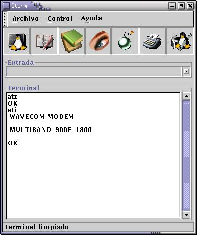
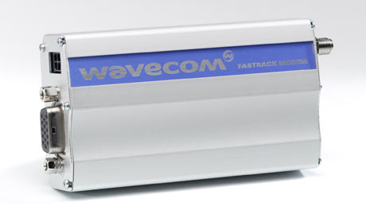
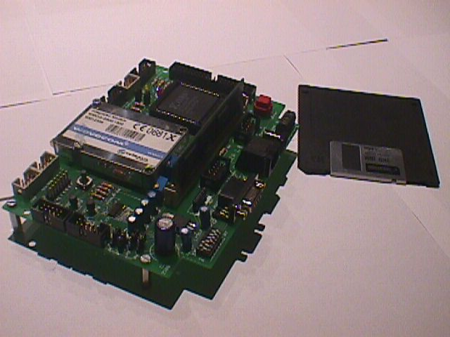

Trabajo desarrollado para la asignatura de doctorado "Nuevas tecnologías para las comunicaciones", curso 2001-2002, impartido en la E.T.S de Informatica de la UAM por los profesores: D. Javier Martínez Rodríguez, D. Francisco Gómez Arribas , Dª Susana Holgado González-Guerrero y D. Luis de Pedro Sánchez
- Juan Gonzalez Gomez. Junio-2002
Todo el software desarrollado tiene LICENCIA GPL . El resto de material (documentación, presentación, etc...) se encuentra bajo LICENCIA FDL (Free Documentation License).
El servicio de mensajes cortos, SMS, está teniendo un gran auge en nuestros días, y está siendo mucho más utilizado de lo que inicialmente se estimó. En este trabajo se describe el servicio SMS desde un punto de vista práctico, haciendo hincapié en cómoo es posible realizar aplicaciones que utilicen este servicio. Se parte de una descripción teóricaa de la red GSM en general y del servicio SMS en particular para familiarizarse con la terminología y tener una idea básica de lo que está pasando por debajo. Se describen los protocolos necesarios, centrándose en la capa de transferencia de mensajes, que es la que se utiliza desde las aplicaciones. Se muestra cómoo es la interfaz entre las aplicaciones y el servicio SMS utilizándose un módemem GSM para tener acceso a ellas, y cómoo es posible controlar este módemem mediante los comandos AT y AT+. Finalmente se muestra un ejemplo de una aplicación, gterm, muy sencilla, que permite enviar mensajes, leerlos, borrarlos, listar los teléfonos, etc. Se trata de una aplicación básica a partir de la cual se pueden realizar programas mucho más complejos.
Aquí puedes ver una captura de pantalla de Gterm-0.1


La aplicación está desarrollada bajo LINUX, usando gnome-1.4 y gtk-1.2. Para el diseño del interfaz gráfico se ha empleado GLADE que permite que todo el interfaz se encuentre en un fichero en XML, que se carga dinámicamente al ejecutarse la aplicación. Esto es muy interesante porque permite independizar totalmente el código fuente del interfaz, pudióndose rediseñar el interfaz sin tener que compilar.
Para utilizar GTERM hay que conectar al puerto serie COM1 un modem GSM, como por ejemplo
este modelo de la compañía
Wavecom que es como se muestra en esta foto:

Como no disponía de uno de esos modelos, he empleado la tarjeta ENDOR de la compañía Pulsar Technologies, desarrollada como parte del proyecto DACER, en el cual participé cuando era miembro de su equipo de I+D. Esta tarjeta tiene muchas funcionalidades sin embargo yo solo he utilizado el modem GSM integrado, que puede ser conectado a un PC como si fuese un modem externo cualquiera. Aquí se muestra una foto.

| FICHEROS PARA DESCARGAR |
| gterm-0.1.tgz (157KB) | Fuentes y ejecutables de la aplicación GTERM-0.1 |
| sms.pdf (510KB) | Trabajo teóricao |
| presentacion.tgz (229KB) | Presentación en Magic Point |
12/Abr/2002: Publicado trabajo. Version 0.1 de Gterm
Publicacion de la aplicación Gterm-0.1 (fuentes y ejecutables) así como el trabajo teóricao y la presentación realizada.
- A la empresa Pulsar Technologies por regalarme un DACER cuando dejé de trabajar allí. Sin el modem que incorpora no hubiese podido realizar la parte práctica de este trabajo, que para mí era lo más interesante. Aprovecho para dar públicamente las gracias.
- A Andrés Prieto-Moreno Torres por dejarme una antena para poder enviar mensajes SMS y por su ayuda para que Pulsar me regalase un DACER ;-)
-
Para realizar la parte práctica de este trabajo (la aplicación GTERM) he re-implementado parte del software que había desarrollado
Andrés Prieto-Moreno Torres para enviar mensajes SMS desde el sistema uClinux. Tambión he utilizado la documentación que creé
sobre el manejo de los modems GSM utilizando comandos AT+